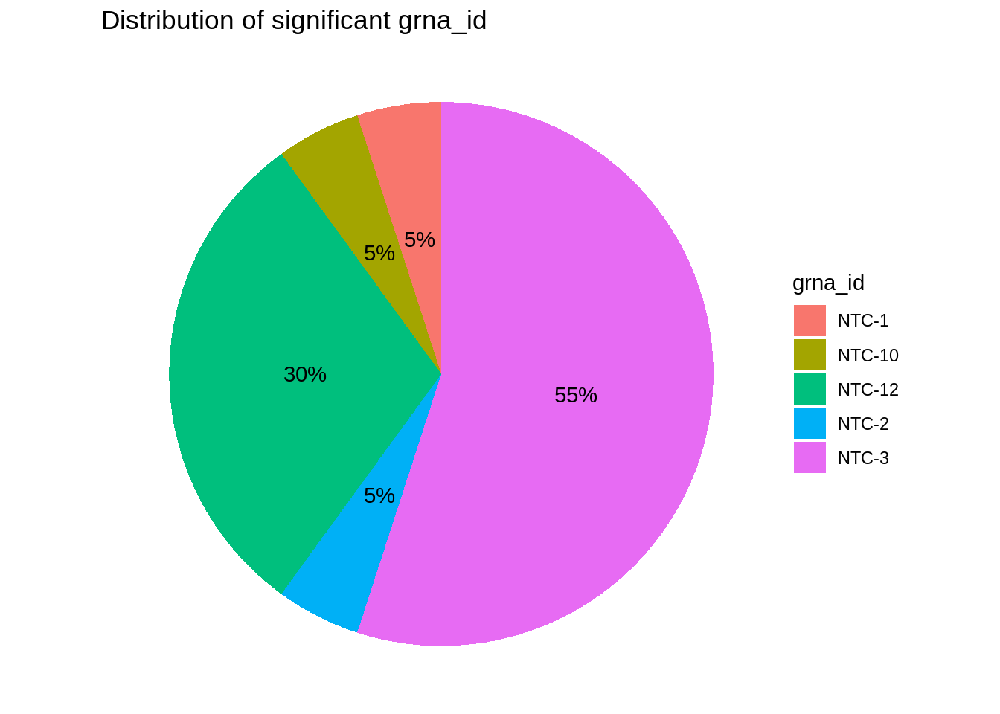
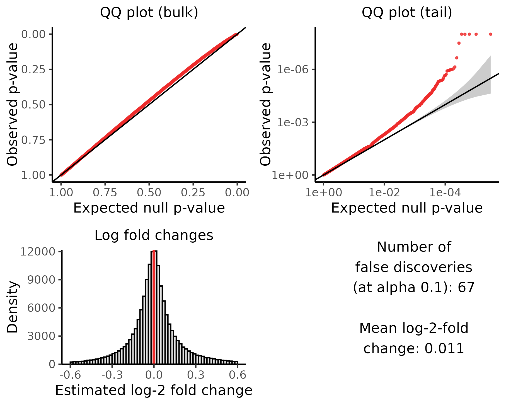

Last updated: 2024-08-08
Checks: 6 1
Knit directory: Getting_started/
This reproducible R Markdown analysis was created with workflowr (version 1.7.1). The Checks tab describes the reproducibility checks that were applied when the results were created. The Past versions tab lists the development history.
Great! Since the R Markdown file has been committed to the Git repository, you know the exact version of the code that produced these results.
Great job! The global environment was empty. Objects defined in the global environment can affect the analysis in your R Markdown file in unknown ways. For reproduciblity it’s best to always run the code in an empty environment.
The command set.seed(20240712) was run prior to running the code in the R Markdown file. Setting a seed ensures that any results that rely on randomness, e.g. subsampling or permutations, are reproducible.
Great job! Recording the operating system, R version, and package versions is critical for reproducibility.
Nice! There were no cached chunks for this analysis, so you can be confident that you successfully produced the results during this run.
Using absolute paths to the files within your workflowr project makes it difficult for you and others to run your code on a different machine. Change the absolute path(s) below to the suggested relative path(s) to make your code more reproducible.
| absolute | relative |
|---|---|
| /project/xuanyao/jiaming/Getting_started/output/sceptre_outputs_cis | output/sceptre_outputs_cis |
| /project/xuanyao/jiaming/Getting_started/output/sceptre_outputs_cis/results_run_calibration_check.rds | output/sceptre_outputs_cis/results_run_calibration_check.rds |
| /project/xuanyao/jiaming/Getting_started/output/sceptre_trans_singleton | output/sceptre_trans_singleton |
| /project/xuanyao/jiaming/Getting_started/output/sceptre_outputs_trans_singleton/results_run_calibration_check.rds | output/sceptre_outputs_trans_singleton/results_run_calibration_check.rds |
Great! You are using Git for version control. Tracking code development and connecting the code version to the results is critical for reproducibility.
The results in this page were generated with repository version ef69a37. See the Past versions tab to see a history of the changes made to the R Markdown and HTML files.
Note that you need to be careful to ensure that all relevant files for the analysis have been committed to Git prior to generating the results (you can use wflow_publish or wflow_git_commit). workflowr only checks the R Markdown file, but you know if there are other scripts or data files that it depends on. Below is the status of the Git repository when the results were generated:
Ignored files:
Ignored: .Rhistory
Ignored: .Rproj.user/
Ignored: analysis/job-info.err
Ignored: analysis/job-info.out
Ignored: analysis/run.sh
Untracked files:
Untracked: analysis/sceptre_singleton.Rmd
Untracked: analysis/sceptre_threshold.Rmd
Untracked: code/create_grna_target_data_frame.Rmd
Untracked: code/try_Knit.Rmd
Untracked: data/GDO_threshold/
Untracked: data/STINGseq-v1_GDO/
Untracked: data/STINGseq-v1_HTO/
Untracked: data/STINGseq-v1_cDNA/
Untracked: output/sceptre_outputs/trans_mixture.txt
Untracked: output/sceptre_outputs_cis/
Untracked: output/sceptre_outputs_cis_singleton/
Untracked: output/sceptre_outputs_cis_threshold/
Untracked: output/sceptre_outputs_cis_threshold5/
Untracked: output/sceptre_outputs_trans_omit_NTC3_12/
Untracked: output/sceptre_outputs_trans_singleton/
Untracked: output/sceptre_outputs_trans_singleton_omit_NTC3_12/
Untracked: output/sceptre_outputs_trans_threshold/
Untracked: output/sceptre_outputs_trans_threshold_omit_NTC3_12/
Untracked: output/try_rcc/
Unstaged changes:
Modified: .gitignore
Deleted: analysis/create_grna_target_data_frame.Rmd
Modified: analysis/sceptre.Rmd
Modified: analysis/sceptre_example.Rmd
Deleted: analysis/seurat_example.Rmd
Modified: analysis/summary.Rmd
Deleted: analysis/try_Knit.Rmd
Deleted: analysis/try_rcc.Rmd
Deleted: output/sceptre_outputs/analysis_summary.txt
Note that any generated files, e.g. HTML, png, CSS, etc., are not included in this status report because it is ok for generated content to have uncommitted changes.
These are the previous versions of the repository in which changes were made to the R Markdown (analysis/qqplot.Rmd) and HTML (docs/qqplot.html) files. If you’ve configured a remote Git repository (see ?wflow_git_remote), click on the hyperlinks in the table below to view the files as they were in that past version.
| File | Version | Author | Date | Message |
|---|---|---|---|---|
| Rmd | ef69a37 | jliucx | 2024-08-09 | update |
| html | af346f4 | jliucx | 2024-08-09 | Build site. |
| Rmd | 3b3d02b | jliucx | 2024-08-09 | update |
| html | 123faeb | jliucx | 2024-08-08 | Build site. |
| Rmd | f988bf1 | jliucx | 2024-08-08 | update |
| html | c99d60f | jliucx | 2024-08-08 | Build site. |
| Rmd | 9377797 | jliucx | 2024-08-08 | update |
| html | 57f4a97 | jliucx | 2024-08-07 | Build site. |
| Rmd | 84b9924 | jliucx | 2024-08-07 | update |
| html | f075160 | jliucx | 2024-08-06 | Build site. |
| Rmd | a748c21 | jliucx | 2024-08-06 | update |
| html | 3ec664c | jliucx | 2024-08-06 | Build site. |
| Rmd | d1c2b02 | jliucx | 2024-08-06 | update |
| html | ae94bb6 | jliucx | 2024-08-05 | Build site. |
| Rmd | a9b748b | jliucx | 2024-08-05 | add summary |
We extract the results of negative control p- values of “/project/xuanyao/jiaming/Getting_started/output/sceptre_outputs_cis” (cis analysis with grna assigned by mixture model). We want to confirm that the qq plot we manually create is the same as the plot that “sceptre” package creates:
library(qqman)For example usage please run: vignette('qqman')Citation appreciated but not required:Turner, (2018). qqman: an R package for visualizing GWAS results using Q-Q and manhattan plots. Journal of Open Source Software, 3(25), 731, https://doi.org/10.21105/joss.00731.library(ggplot2)
results_run_calibration_check <- readRDS("/project/xuanyao/jiaming/Getting_started/output/sceptre_outputs_cis/results_run_calibration_check.rds")p_val=results_run_calibration_check$p_valuep_val <- sort(p_val)
n <- length(p_val)
expected <- ppoints(n)
# Calculate observed p-values
observed <- p_val # Reversing the scale
# Create a data frame for plotting
data <- data.frame(Expected = expected, Observed = observed)
# Create the QQ plot with reversed axes
ggplot(data, aes(x = Expected, y = Observed)) +
geom_point(size=0.9, color="red") + # Plot the points
geom_abline(slope = 1, intercept = 0, color = "black") + # Add reference line
scale_x_reverse(limits = c(1, 0)) + # Reverse x-axis
scale_y_reverse(limits = c(1, 0)) + # Reverse y-axis
coord_fixed() +
labs(title = "QQ plot (bulk)",
x = "Expected null p-value",
y = "Observed p-value") +
theme_minimal()
| Version | Author | Date |
|---|---|---|
| ae94bb6 | jliucx | 2024-08-05 |
gg_qqplot <- function(ps, ci = 0.95) {
n <- length(ps)
df <- data.frame(
observed = -log10(sort(ps)),
expected = -log10(ppoints(n)),
clower = -log10(qbeta(p = (1 - ci) / 2, shape1 = 1:n, shape2 = n:1)),
cupper = -log10(qbeta(p = (1 + ci) / 2, shape1 = 1:n, shape2 = n:1))
)
log10Pe <- expression(paste("Expected -log"[10], plain(P)))
log10Po <- expression(paste("Observed -log"[10], plain(P)))
ggplot(df) +
geom_ribbon(mapping = aes(x = expected, ymin = clower, ymax = cupper),
alpha = 0.1) +
geom_point(aes(expected, observed), size = 1.5, color="red") +
geom_abline(intercept = 0, slope = 1, alpha = 0.5) +
xlab(log10Pe) + ylab(log10Po)
}gg_qqplot(p_val)
| Version | Author | Date |
|---|---|---|
| ae94bb6 | jliucx | 2024-08-05 |
Below is the qq plot of negative control p-values, which is identical to the qq plots that we manually create.
| Version | Author | Date |
|---|---|---|
| a9b748b | jliucx | 2024-08-05 |
To examine whether the p-values on the summary table are subject to multiple testing correction (if so, what type of correction?), we notice that the p_value and the significant results does not match (although the significance level \(\alpha=0.1\), most p_values with magnitude e-05 or beyond are labeled “not significant”).
The output file we used here is “/project/xuanyao/jiaming/Getting_started/output/sceptre_trans_singleton”
According to the package description, The parameter multiple_testing_method controls the multiple testing method that is used to adjust the p-values. The default option is Benjamini-Hochberg ("BH"). The parameter multiple_testing_alpha (default value 0.1) controls the level of the multiple testing procedure. If multiple_testing_method is set to a method that controls that false discovery rate (e.g., "BH" or "BY"), then multiple_testing_alpha is the nominal false discovery rate. If, on the other hand, multiple_testing_method is set to a method that controls the family-wise error rate (e.g., "bonferroni" or "holm"), then multiple_testing_alpha is the nominal family-wise error rate.
We create a new column “adj_p_value” which applies BH correction to the p-values. Not surprisingly, the adjusted p values matches perfectly with significant results. This indicate that the output p_values of sceptre are raw, and the significant results are based on adjusted p-values.
library(dplyr)
Attaching package: 'dplyr'The following objects are masked from 'package:stats':
filter, lagThe following objects are masked from 'package:base':
intersect, setdiff, setequal, unionresults_run_calibration_check <- readRDS("/project/xuanyao/jiaming/Getting_started/output/sceptre_outputs_trans_singleton/results_run_calibration_check.rds")
results_run_calibration_check <- results_run_calibration_check %>%
mutate(adj_p_value = p.adjust(p_value, method = "BH"))
results_run_calibration_check[c(1:10,70:80),c(1,2,7,9,10)] response_id grna_id p_value significant adj_p_value
1 ENSG00000111371 NTC-3 2.098900e-37 TRUE 3.265784e-32
2 ENSG00000105397 NTC-3 5.915662e-15 TRUE 4.602237e-10
3 ENSG00000134453 NTC-3 5.164750e-10 TRUE 2.678698e-05
4 ENSG00000140543 NTC-8 3.345412e-09 TRUE 1.301324e-04
5 ENSG00000148288 NTC-12 7.148804e-09 TRUE 2.224636e-04
6 ENSG00000134419 NTC-8 3.212665e-08 TRUE 8.331244e-04
7 ENSG00000239672 NTC-3 2.209987e-07 TRUE 4.912327e-03
8 ENSG00000126432 NTC-3 7.304610e-07 TRUE 1.378937e-02
9 ENSG00000148303 NTC-8 9.435981e-07 TRUE 1.378937e-02
10 ENSG00000171863 NTC-10 1.010959e-06 TRUE 1.378937e-02
70 ENSG00000103021 NTC-12 4.580678e-05 FALSE 1.007067e-01
71 ENSG00000102390 NTC-5 4.595377e-05 FALSE 1.007067e-01
72 ENSG00000160446 NTC-11 4.913498e-05 FALSE 1.061827e-01
73 ENSG00000152795 NTC-3 5.197139e-05 FALSE 1.105604e-01
74 ENSG00000142937 NTC-8 5.258184e-05 FALSE 1.105604e-01
75 ENSG00000114779 NTC-8 5.346174e-05 FALSE 1.109117e-01
76 ENSG00000160229 NTC-6 5.593555e-05 FALSE 1.134165e-01
77 ENSG00000165732 NTC-3 5.636354e-05 FALSE 1.134165e-01
78 ENSG00000149646 NTC-12 5.685587e-05 FALSE 1.134165e-01
79 ENSG00000274997 NTC-9 5.962407e-05 FALSE 1.174330e-01
80 ENSG00000165629 NTC-12 6.113559e-05 FALSE 1.187852e-01We noticed that the calibration check result when we perform “trans analysis”(it also contains cis analysis) is inflated. To see whether there might be problem with NT gRNA design, we find that NTC-3 and NTC-12 contribute to over 50% percent of false positive discoveries.
filtered_data <- results_run_calibration_check %>% filter(significant == TRUE)
grna_count <- filtered_data %>%
group_by(grna_id) %>%
summarise(count = n()) %>%
ungroup()
# Calculate the percentage
grna_count <- grna_count %>%
mutate(percentage = count / sum(count) * 100)
# Create the pie chart
ggplot(grna_count, aes(x = "", y = count, fill = grna_id)) +
geom_bar(width = 1, stat = "identity") +
coord_polar("y") +
theme_void() +
geom_text(aes(label = paste0(round(percentage, 1), "%")),
position = position_stack(vjust = 0.5)) +
labs(title = "Distribution of significant grna_id", fill = "grna_id")
| Version | Author | Date |
|---|---|---|
| ae94bb6 | jliucx | 2024-08-05 |
Therefore, we perform the analysis again omitting the NTC-3 and NTC-12, and below are the outcomes.

| Version | Author | Date |
|---|---|---|
| 9377797 | jliucx | 2024-08-08 |
| Version | Author | Date |
|---|---|---|
| a9b748b | jliucx | 2024-08-05 |
| Version | Author | Date |
|---|---|---|
| 84b9924 | jliucx | 2024-08-07 |
| Version | Author | Date |
|---|---|---|
| 9377797 | jliucx | 2024-08-08 |
| Version | Author | Date |
|---|---|---|
| a9b748b | jliucx | 2024-08-05 |
Attaching package: 'kableExtra'The following object is masked from 'package:dplyr':
group_rows| Mixture(Singleton) | Mixture(Unicon) | Threshold | |
|---|---|---|---|
| original | 67/155595 | 292/976820 | 51/1027281 |
| removing NTC3&12 | 15/126552 | 158/652822 | 0/684410 |
In many cases, there are multiple gRNAs targeting at the same target. How to combine the information of them to perform analysis becomes important in those scenarios.
The default option for grna_integration_strategy is "union". This strategy constructs a “grouped gRNA” by combining all gRNAs that target a given genomic element via a union operation; this “grouped gRNA” is then tested for association against the responses to which the element is paired. We illustrate this grouping strategy using an example. Suppose that “gRNA 1” and “gRNA 2” target the same genomic element. Suppose that “gRNA 1” is present in the cells indexed 3, 6, 9 and that “gRNA 2” is present in the cells indexed 1, 4, 6, 10. The “grouped gRNA” formed combining “gRNA 1” and “gRNA 2” via the union operation is defined to be present in the cells indexed 1, 3, 4, 6, 9, 10. (See schematic below.) This “grouped gRNA” is then tested against responses as if it were a single gRNA.
| Version | Author | Date |
|---|---|---|
| a9b748b | jliucx | 2024-08-05 |
Consider a given target-response pair. Suppose that k gRNAs \(\text{gRNA}_1 \ldots\text{gRNA}_k\) target this target. Moreover, suppose that, upon testing for association between each of these gRNAs and the response, we obtain gRNA-wise p-values \(p_1, \ldots, p_k\). The Bonferroni p-value is defined as follows:
\[ p = k \cdot \min \{ p_1, \ldots, p_k \}. \]
The Bonferroni p-value is valid in the following sense: if \(p_1, \ldots, p_k\) are valid (i.e., uniformly distributed) p-values, then \(p\) too is a valid (i.e., uniformly distributed) p-value. (The gRNA-wise p-values \(p_1, \ldots, p_k\) can be arbitrarily dependent.) Below, we state this result in a slightly more precise way and prove its correctness. "Superuniformity’’ is more general than uniformity and is sufficient for p-value validity. This proof is standard; see, e.g., the Bonferroni correction \href{https://en.wikipedia.org/wiki/Bonferroni_correction%7D%7BWikipedia page}.
This method treat each gRNA as a unit instead of treating each gRNA target as a unit. Hence, suppose each target is targeted by 2 gRNAs, and if you test 100 target-gene pairs, you will get 200 p-values as a outcome, which will subject to multiple testing correction later for significance analysis.
In order to find out how the assignment of gRNA to cell affect the p-value, we perform different assignment strategy and compare different calibration results.
| Version | Author | Date |
|---|---|---|
| a9b748b | jliucx | 2024-08-05 |
| Version | Author | Date |
|---|---|---|
| a9b748b | jliucx | 2024-08-05 |
| Version | Author | Date |
|---|---|---|
| a9b748b | jliucx | 2024-08-05 |
My point is that the rationale for this resampling algorithm is to break the latent relationship of gRNA presence and gene expression and see whether the test statistics changes significantly. Suppose there are no direct relationship between gRNA presence and gene expression, then doing so won’t change the test statistics a lot.
However, I think this method resample only based on the cell covariates, neglecting the fact that the measured gRNA presence is also determined by the real presence of gRNA. Hence resample based on regression on cell covariate may also break down the correlation between measured gRNA and true gRNA presence. This kind of test works definitely when we assume that measured gRNA presence are only determined by cell covariate. I am not sure whether doing conditional randomization test, conditioning only on the cell covariate is adequate in this sense. I think including the ture gRNA presence as a latent variable when doing conditional randomization test might be better, statistically.
sessionInfo()R version 4.1.0 (2021-05-18)
Platform: x86_64-pc-linux-gnu (64-bit)
Running under: CentOS Linux 8
Matrix products: default
BLAS/LAPACK: /software/openblas-0.2.19-el8-x86_64/lib/libopenblas_haswellp-r0.2.19.so
locale:
[1] LC_CTYPE=en_US.UTF-8 LC_NUMERIC=C LC_TIME=C
[4] LC_COLLATE=C LC_MONETARY=C LC_MESSAGES=C
[7] LC_PAPER=C LC_NAME=C LC_ADDRESS=C
[10] LC_TELEPHONE=C LC_MEASUREMENT=C LC_IDENTIFICATION=C
attached base packages:
[1] stats graphics grDevices utils datasets methods base
other attached packages:
[1] kableExtra_1.4.0 knitr_1.48 dplyr_1.1.4 ggplot2_3.5.1
[5] qqman_0.1.9 workflowr_1.7.1
loaded via a namespace (and not attached):
[1] tidyselect_1.2.0 xfun_0.45 bslib_0.7.0 colorspace_2.1-0
[5] vctrs_0.6.4 generics_0.1.3 viridisLite_0.4.2 htmltools_0.5.8.1
[9] yaml_2.2.1 utf8_1.2.1 rlang_1.1.2 jquerylib_0.1.4
[13] later_1.2.0 pillar_1.9.0 glue_1.6.2 withr_2.5.2
[17] calibrate_1.7.7 lifecycle_1.0.4 stringr_1.5.1 munsell_0.5.0
[21] gtable_0.3.0 evaluate_0.23 labeling_0.4.3 callr_3.7.6
[25] fastmap_1.1.1 httpuv_1.6.1 ps_1.7.5 fansi_1.0.5
[29] highr_0.11 Rcpp_1.0.12 promises_1.2.0.1 scales_1.3.0
[33] cachem_1.0.8 jsonlite_1.8.7 systemfonts_1.1.0 farver_2.1.1
[37] fs_1.6.3 digest_0.6.33 stringi_1.6.2 processx_3.8.4
[41] getPass_0.2-2 rprojroot_2.0.4 grid_4.1.0 cli_3.6.1
[45] tools_4.1.0 magrittr_2.0.3 sass_0.4.9 tibble_3.2.1
[49] whisker_0.4.1 pkgconfig_2.0.3 MASS_7.3-60 xml2_1.3.2
[53] svglite_2.0.0 rmarkdown_2.27 httr_1.4.2 rstudioapi_0.15.0
[57] R6_2.5.1 git2r_0.32.0 compiler_4.1.0